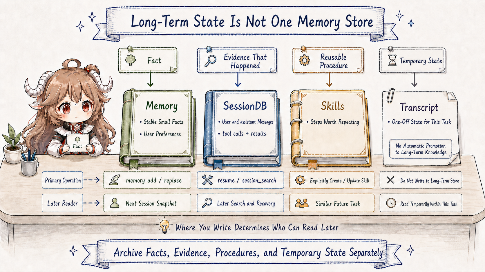

Continue the repair task from the first chapter. You ask Hermes to fix a failing test, then add one sentence: "Do not edit generated files directly in this repository." A few days later it enters the same directory again. The useful behavior is not merely preserving those words. Hermes first has to recognize what they are: a constraint for this task, a durable repository rule, or a preference that follows you across every project.
Put the sentence only in the current transcript and a later turn may not retrieve it. Put it in
USER.md and unrelated repositories may inherit it. Put it in the project's
AGENTS.md and it follows that repository, which is correct only when the rule truly belongs to
the project. Turn it into a Skill and a one-line prohibition has been mistaken for a procedure. Before an
agent can "remember," it must decide where the information applies, how long it lives, and when it
should appear again.
Questions this article answers. By the end, you should be able to classify a new piece of information as an instruction, preference, piece of evidence, reusable procedure, or one-off state before naming any Hermes file. You should then be able to explain why it belongs in a system-prompt tier, Memory, SessionDB, a Skill, or the transcript only.
The chapter uses Hermes Agent snapshot fa1a5c0. The version matters because the current
implementation moved the Skill index into the later volatile tier rather than the stable
prefix. The discussion below follows the current source instead of carrying an older layout forward.
1. Classify the information before choosing a file
A beginner's first impulse is often to start from a product noun: "Should this go into Memory?" A more reliable sequence starts with four ordinary questions.
| Question | Possible answer for the generated-file rule | What it decides |
|---|---|---|
| Who does it constrain? | This repository only, or this user in every project. | Project Context and a user profile cannot substitute for each other. |
| How long should it live? | Until this task ends, or whenever the repository is opened. | A transcript entry and durable state make different promises. |
| Is it a fact, evidence, or a method? | A preference is a fact; a failed log is evidence; regeneration is a method. | Memory, SessionDB, and Skills cannot substitute for each other. |
| When should it reappear? | At workspace entry, or only when a matching task occurs. | Always-on prompt material differs from on-demand retrieval. |
The order is simple: scope first, then lifetime, then information type, then read timing. The tiers and storage locations in Hermes implement those decisions. Start with the system prompt, because it is the instruction text the model receives before doing any work.
2. A system prompt is not one large bag
A model call needs an opening instruction that explains identity, tools, and current workspace rules. That opening is the system prompt. An implementation can simply concatenate identity, tool help, project files, user preferences, the date, and temporary search results. It will run, but every small change can disturb the front of the request, and the origin of each rule becomes progressively harder to audit.
Hermes instead uses
build_system_prompt_parts
to place material into three ordered tiers before joining it once. The order does not rank importance. It
ranks how likely the bytes are to remain stable across sessions and rebuilds.
The opening instruction-assembly desk draws that relationship as two routes. Three tiers become one session-level system prompt on the workbench; turn-only recall stays in the lower lane and changes only the current model input. The next sections explain why each piece belongs where it is drawn.
2.1 What stable, context, and volatile protect
stable comes first. It contains identity, general tool guidance, completion rules, and other
relatively stable runtime instructions. Its invariant is a reusable prefix: when these bytes stay fixed,
an upstream provider has a better chance of reusing prompt-cache work.
context carries workspace-dependent material: the coding workspace snapshot, a caller-supplied
system message, and project Context files. It is not universal identity, but it normally stays fixed
through one project session. Keeping it separate also makes the authority of a rule visible.
volatile contains material most likely to differ on the next rebuild: the Skill index,
MEMORY.md, USER.md, an external memory-provider block, and session metadata.
Placing it last protects the longer prefix when the tail changes. Yet volatile does not mean
rebuilt every turn. The complete result is cached on the current AIAgent by
build_system_prompt
and is normally constructed once per session, with compaction or restore paths providing rebuild points.
return {
"stable": "\n\n".join(stable_parts),
"context": "\n\n".join(context_parts),
"volatile": "\n\n".join(volatile_parts),
}This snapshot rule explains a seemingly surprising behavior. A Memory tool call can write a new preference to disk during the current turn without rewriting the system prompt already in use. The disk truth and the current model's session snapshot have different lifetimes; the write did not fail.
2.2 Why project Context selects one authoritative source
Project rules cannot safely concatenate every candidate file either. A repository may contain
HERMES.md, AGENTS.md, and CLAUDE.md with conflicting build commands.
Hermes resolves that ambiguity in
build_context_files_prompt
with a first-match priority: .hermes.md/HERMES.md, then cwd-level AGENTS.md, then
CLAUDE.md, and finally Cursor rules. SOUL.md is an independent identity source,
not another competitor in the project-rule chain.
project_context = (
load_hermes_md(cwd)
or load_agents_md(cwd)
or load_claude_md(cwd)
or load_cursorrules(cwd)
)
That or chain protects a single authority. If the generated-file constraint is genuinely a
repository convention, the selected project Context file is its natural storage location. The rule follows the
workspace and remains reviewable in source control. Copying it into user Memory would let a local policy
leak into unrelated projects.
2.3 Why turn-only material is not a fourth system-prompt tier
While fixing the test, an external memory provider may retrieve one related note and a plugin may add
request-specific context. These facts serve the current decision only. Hermes does not add a fourth
system-prompt tier. Instead,
compose_user_api_content
appends them to the API copy of the current user message.
The stored user text remains "fix the failing test," while the model-bound copy can contain that request
plus recalled context. Hermes persists the exact sent bytes in an api_content sidecar near the
end of turn setup; see
the sidecar stamp.
Replay can therefore send the same bytes without pretending the temporary material was part of the user's
original message.
3. Durable state is three different promises
Now move from what the model sees now to what future work can recover. A preference, a failed log, and a reusable repair procedure may all help later, but each promises something different: a small fact remains true, an event really happened, or a method can be applied to another task.

3.1 Memory: small stable facts for the next snapshot
Built-in Hermes Memory is not an unlimited vector database. It is two bounded, auditable files.
MEMORY.md stores short environment and agent facts; USER.md stores user preferences
and communication style. Their default budgets are only 2,200 and 1,375 characters. The design is asking
for compact facts rather than copied conversations.
MemoryStore
maintains live entries and a frozen system-prompt snapshot. At session start, disk entries are scanned for
threat patterns before the snapshot is formed. Calls to add and replace update live
state and disk without silently mutating the snapshot already given to the model.
Writes also have explicit rejection conditions. Empty or duplicate content, injection and exfiltration
patterns, character-budget overflow, and read failures are rejected. A replacement that matches multiple
different entries is not guessed. Those checks are visible in
add and replace.
The longer a fact is expected to live, the more conservative its write path should be.
3.2 SessionDB: preserve what happened without rewriting it
When you ask, "What was the failed command last time?" you need evidence rather than a long-term
preference. Hermes stores user messages, assistant messages, tool calls, and tool results in a SQLite
session database. session_search queries its FTS5 indexes and does not call another model, so
its windows come from real stored messages rather than a freshly generated summary.
The discovery path calls db.search_messages, deduplicates by session lineage, and returns a
window around each anchored match plus beginning and ending bookends; see
_discover.
A reader can recover which turn contained the evidence and what happened around it, not just a detached keyword.
3.3 Skills: preserve how to act, not merely what happened
Suppose the repair reveals a reusable procedure: change the schema, run the generator, then verify that
the generated diff contains no manual edits. That is no longer a fact. It is procedural memory. The
system prompt carries a compact Skill index, and the model loads the full body with
skill_view only when a task matches.
The current
build_skills_system_prompt
uses an in-process LRU and a disk snapshot to accelerate index construction. That does not mean
Hermes evicts Skill knowledge by LRU. The cache stores the rendered directory; it is not a value ranking
for Skills. The next chapter will trace the separate Curator lifecycle.
skill_manage
supports create, edit, patch, delete, and supporting-file operations. A successful change clears the
Skill-index caches so later prompt construction sees the new directory. It does not reorder the current
session's already cached system prompt after every write. The current task knows what it changed; future
sessions rediscover it from the rebuilt index.
4. One sentence in five locations produces five behaviors
Run a counterfactual with the same generated-file rule. Its location changes how and when the runtime applies it.
| Stored in | Use it when | How it reappears | Cost of a wrong placement |
|---|---|---|---|
| Project Context | Every contributor and task in this repository should follow the rule. | A new workspace session loads the authoritative Context file. | Competing rule files make authority ambiguous. |
USER.md |
The preference is stable across the user's projects. | The next user-profile snapshot enters the volatile tail. | A local repository policy leaks into unrelated work. |
| SessionDB | You need proof of when the user said it and in what context. | session_search retrieves the real message window. |
A summary can erase wording and surrounding evidence. |
| Skill | There is a reusable procedure for regenerating safely. | An index match leads to on-demand loading of the full procedure. | A preference becomes a heavy, poorly triggered workflow. |
| Transcript only | The constraint applies only to the current task. | It remains available for recovery and audit, not always-on prompting. | Premature persistence hardens temporary state into policy. |

5. Walk one user sentence to its correct storage location
Compress the chapter into one replayable decision. The user says, "Do not edit generated files for this task." First preserve the original words in the transcript so the turn can recover after a crash. Let the current model input include them, change the schema rather than the generated output, run the generator, and deliver the task. The word "remember" is not itself permission to write long-term state.
Only then inspect scope. If the repository's authoritative Context file already carries the rule, do not
duplicate it. If the user explicitly makes it a stable preference across projects, distill one short
USER.md fact. If the reusable part is the regeneration and verification procedure, patch a
matching Skill. Otherwise preserve only history. SessionDB already satisfies "find the original later,"
so choosing not to create long-term state is not the same as forgetting.
Preserve the words and finish the current task.
Then determine their scope.
Facts go to Memory, evidence stays in SessionDB, methods become Skills.
Without durable value, keep only the transcript.
This is not one literal if function in Hermes. It is a reading method derived from the public
read and write behavior of each component. Its central distinction is that real history should be preserved early, while
distilling that history into durable state requires a higher threshold.
6. Conclusion: state design is about future visibility
The source names now form one route. The system prompt determines which instructions a session starts with. Project Context supplies repository authority. Memory supplies compact stable facts. SessionDB preserves searchable evidence. Skills hold procedures loaded on demand. Turn-only material changes only the API copy of the current user message.
These mechanisms differ by more than file format. They assign who can write, when a reader sees the result, whether the current session changes immediately, and which copy remains authoritative after a failure. The useful question is no longer "Which memory should hold this?" It is: in which future situation should which component make this information visible to the model?
Knowing where experience belongs still does not explain how a completed task becomes a candidate fact or procedure. The next chapter starts at the finalizer and follows background review, nudge, and Curator through the post-delivery learning path, including why that path must not compete with the user's answer.
Sources
- Fixed source snapshot: NousResearch/hermes-agent
- three-tier system-prompt assembly
- context, volatile, and final assembly
- project Context priority
- turn-only api_content composition and replay
- Memory live state and frozen snapshot
- Memory write protections
- SessionDB FTS5 discovery
- two-layer Skill-index cache
- skill_manage writes and cache invalidation